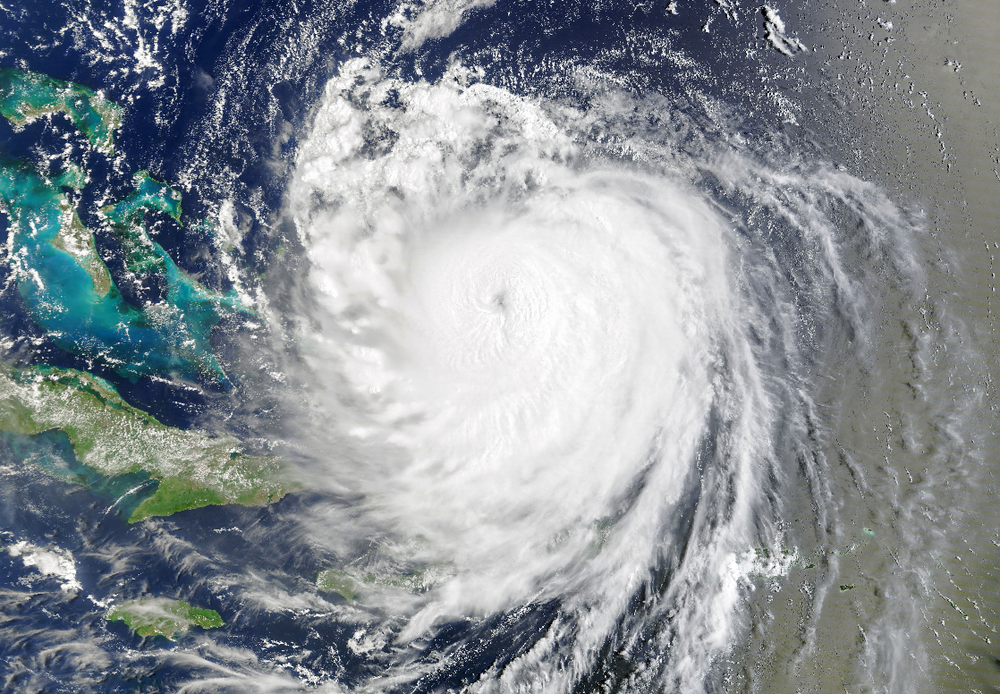

Hurricane Erin Roils in the Atlantic
The first Atlantic hurricane in the 2025 season, Hurricane Erin rapidly intensified over the ocean as it approached the Caribbean and the U.S. Eastern Seaboard. Although it did not make landfall, the powerful storm system sent heavy rain and strong winds to coastal areas of Puerto Rico, the Turks and Caicos Islands, the Bahamas, and the U.S. Atlantic coast.
This animation, composed of images acquired with the VIIRS (Visible Infrared Imaging Radiometer Suite) on the Suomi NPP satellite, shows Erin’s path from August 14 to 19. The storm reached hurricane strength on August 15, then rapidly intensified from a Category 1 to a Category 5 storm in just over 24 hours. Sustained wind speeds reached 160 miles (260 kilometers) per hour—the strongest associated with the storm—on August 16, when the hurricane was northeast of Puerto Rico.
Several environmental factors facilitated Erin’s rapid intensification, including light wind shear and a compact storm structure, according to a blog post by meteorologist Bob Henson. Sea surface temperatures were also unusually warm for mid-August, and the storm’s swift movement over the ocean allowed it less time to churn up warm surface waters, helping sustain the heat as an energy source. Erin was only the 43rd Atlantic hurricane to reach Category 5 since official records began in 1851 and the earliest in this location, noted University of Miami meteorologist Brian McNoldy.
A satellite image shows the spiraling clouds of Hurricane Erin over the Atlantic Ocean. Its center, which has a well-defined eye, is located north of Haiti and the Dominican Republic.
Hurricane Erin continued on its westward path, weakening slightly after undergoing eyewall replacement cycles. This common process for intense hurricanes decreases maximum wind speeds but expands the size of the wind field. The eye of the storm was prominent on August 18, when the MODIS (Moderate Resolution Imaging Spectroradiometer) sensor on NASA’s Terra satellite acquired the image above.
Outer bands of the storm lashed Caribbean islands as it passed nearby. Puerto Rico received heavy rains and high winds on August 17, according to news reports, and widespread power outages affected more than 147,000 customers. The Turks and Caicos Islands and the Bahamas braced for tropical storm conditions, including dangerous surf, strong winds, and coastal flooding, through August 19.
Forecasts next showed Erin bending north to parallel the eastern coast of the United States as a Category 2 storm. Despite staying hundreds of miles offshore, the hurricane was expected to whip up hazardous conditions all the way from Florida to Canada. People in North Carolina’s Outer Banks were under an evacuation order, and the state’s governor declared a state of emergency. In New York and New Jersey, officials urged beachgoers to stay out of the ocean. Forecasters warned of dangerous surf and rip currents, flooding, and beach erosion along the Eastern Seaboard.